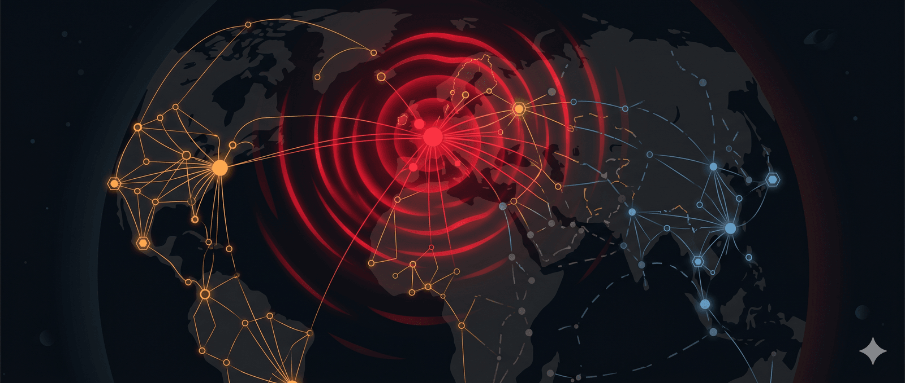

Luận điểm cốt lõi
Michael Spence – Nhà kinh tế học đoạt giải Nobel, Giáo sư Danh dự tại Đại học Stanford
Trong một mạng lưới phi tập trung và cạnh tranh cao, các nhà đầu tư có động lực tối ưu hóa hiệu quả hơn là khả năng phục hồi — vì lợi ích hiệu quả mang tính chiếm hữu (thuộc về nhà đầu tư), còn lợi ích phục hồi lan tỏa khắp mạng lưới. Sự bất đối xứng động lực này đã tạo ra một nền kinh tế toàn cầu cực kỳ mong manh.
I. Bản đồ Các Điểm Nghẽn
1.1 Điểm nghẽn địa lý
Dòng chảy thương mại toàn cầu đi qua một số hành lang hẹp, mỗi điểm là một nút thắt tiềm tàng:
| Điểm nghẽn | Lưu lượng | Rủi ro |
|---|---|---|
| Eo biển Hormuz | ~20% dầu mỏ, ~25% phân bón toàn cầu | Xung đột Iran–phương Tây |
| Eo biển Malacca | Tuyến duy nhất nối Ấn Độ Dương–Thái Bình Dương | Kịch bản xung đột Mỹ–Trung |
| Kênh đào Suez | ~12% thương mại hàng hải toàn cầu | Ever Given 2021: gián đoạn nhiều tháng |
| Kênh đào Panama | ~5% thương mại hàng hải toàn cầu | Biến đổi khí hậu làm cạn mực nước |
Bài học từ Ever Given (2021)
Con tàu chặn Suez 6 ngày nhưng tạo ra gián đoạn chuỗi cung ứng nhiều tháng. Đây là minh chứng cho hiệu ứng phi tuyến: một cú sốc nhỏ tại nút thắt → tổn thương không cân xứng lan toàn mạng lưới.
1.2 Điểm nghẽn công nghệ
Bán dẫn — Tháp nhọn của quyền lực kỹ thuật số:
- ASML (Hà Lan): Công ty duy nhất sản xuất máy quang khắc EUV — linh hồn của chip tiên tiến
- TSMC (Đài Loan) + Samsung (Hàn Quốc): Hai công ty duy nhất sản xuất được chip 2nm
- Hệ quả: Nếu Đài Loan bị tấn công hoặc phong tỏa, toàn bộ nền kinh tế số toàn cầu — từ AI đến xe tự hành — sẽ sụp đổ trong vòng vài tháng
Linh kiện vi điều khiển (2011): Trận động đất Nhật Bản → gián đoạn cung ứng bộ vi điều khiển từ một vài nhà sản xuất → ngành ô tô toàn cầu tê liệt. Nguyên nhân: sự tập trung thị trường không ai để ý vì từng linh kiện quá nhỏ.
1.3 Điểm nghẽn nguyên liệu chiến lược
Đất hiếm — Vũ khí địa chính trị trá hình:
- Trung Quốc kiểm soát ~60% khai thác và >90% chế biến đất hiếm toàn cầu
- Ứng dụng: xe điện, đồ điện tử, công nghệ quân sự, thiết bị y tế
- Khi Trung Quốc kiểm soát xuất khẩu → đây không còn là quan hệ kinh tế mà là quan hệ quyền lực
1.4 Điểm nghẽn tài chính
SWIFT — Hệ thống nhắn tin liên ngân hàng do Mỹ kiểm soát:
- Loại Nga khỏi SWIFT (2022) → vũ khí hóa cơ sở hạ tầng tài chính
- Tạo động lực cho Trung Quốc, Nga, Ấn Độ xây dựng hệ thống thay thế (CIPS, MIR)
- Paradox: Vũ khí hóa SWIFT dài hạn có thể làm suy yếu chính đặc quyền đồng đô-la Mỹ
II. Phân tích Biện Chứng
Phương pháp
Mỗi luận điểm được kiểm tra qua lăng kính Luận – Phản luận – Tổng hợp để tránh tư duy một chiều.
2.1 Luận điểm về Hiệu quả vs. Khả năng Phục hồi
Luận (Thesis): Toàn cầu hóa và chuyên môn hóa cực đoan tạo ra hiệu quả tối ưu — giá thành thấp, năng suất cao, tăng trưởng nhanh.
Phản luận (Antithesis): Hiệu quả ngắn hạn tạo ra mong manh hệ thống (systemic fragility). Nassim Taleb gọi đây là “antifragility failure” — các hệ thống được tối ưu hóa cho điều kiện bình thường nhưng sụp đổ khi gặp “thiên nga đen”. Đại dịch COVID-19 là cuộc kiểm tra thực tế: hệ thống y tế toàn cầu phụ thuộc vào dây chuyền sản xuất thiết bị bảo hộ ở Trung Quốc.
Tổng hợp (Synthesis): Cần phân biệt hiệu quả phân bổ (allocative efficiency — tối ưu ngắn hạn) với hiệu quả hệ thống (systemic efficiency — tối ưu dài hạn có tính đến rủi ro). Khả năng phục hồi không phải là sự lãng phí — nó là bảo hiểm ẩn chưa được định giá.
2.2 Luận điểm về Vai trò của Nhà nước
Luận: Thị trường tự do sẽ tự điều chỉnh — nếu phụ thuộc vào một nguồn cung gây ra rủi ro, các doanh nghiệp sẽ tự đa dạng hóa.
Phản luận: Đây là thất bại thị trường cổ điển (market failure). Lợi ích của khả năng phục hồi là hàng hóa công cộng — lan tỏa ra toàn mạng lưới nhưng chi phí do một bên gánh chịu. Không ai có động lực “trả tiền” cho sự an toàn của toàn bộ hệ thống. Đây là bài toán người tù (Prisoner’s Dilemma) ở quy mô quốc gia.
Tổng hợp: Nhà nước đóng vai trò thiết yếu như kiến trúc sư hệ thống — không phải can thiệp vào từng quyết định kinh doanh, mà thiết lập quy tắc và khuyến khích để nội hóa chi phí rủi ro hệ thống. Spence chỉ ra: internet hoạt động tốt vì chính phủ Mỹ từng đóng vai trò kiến trúc sư, đảm bảo các giao thức tự động chuyển hướng lưu lượng khi có sự cố.
2.3 Luận điểm về Tự lực vs. Hợp tác
Luận (góc nhìn dân tộc chủ nghĩa): Nội địa hóa sản xuất chiến lược là cách duy nhất để đảm bảo an ninh quốc gia — không thể tin vào đồng minh khi khủng hoảng thực sự xảy ra.
Phản luận (góc nhìn tự do thương mại): Nội địa hóa cực đoan là không khả thi và phản tác dụng. Không một quốc gia nào có thể tự sản xuất tất cả hàng hóa chiến lược với chi phí cạnh tranh. Cố gắng làm vậy sẽ dẫn đến lãng phí khổng lồ và giảm năng lực đổi mới.
Tổng hợp: Spence đề xuất quy tắc ngón tay cái thực dụng: hợp tác rẻ hơn, hiệu quả hơn, nhưng khó hơn — đặc biệt trong bối cảnh địa chính trị phân mảnh. Giải pháp tối ưu là “friendshoring” (đa dạng hóa trong phạm vi các đồng minh tin cậy), không phải tự cô lập hoàn toàn.
III. Tư duy Hệ thống: Tại sao Mạng lưới Tạo ra Điểm Nghẽn?
Lý thuyết mạng lưới
Mạng lưới có hai kiến trúc cực:
- Hub-and-spoke (bánh xe – nan hoa): Hiệu quả cao, mong manh cao — một nút trung tâm sụp đổ kéo theo toàn bộ mạng
- Mesh (lưới): Mạnh mẽ hơn, tốn kém hơn — mỗi nút có nhiều kết nối dự phòng
Kinh tế toàn cầu tự nhiên hướng đến hub-and-spoke vì hiệu quả kinh tế theo quy mô — nhưng điều này có nghĩa là mỗi “hub” đều là điểm nghẽn tiềm tàng.
Nghịch lý Tập trung Quyền sở hữu
Spence đưa ra một quan sát phản trực giác: các mạng lưới có sở hữu tập trung đôi khi phục hồi tốt hơn các mạng lưới cạnh tranh phi tập trung.
Ví dụ:
- Cáp quang biển: 3 công ty (Alcatel, SubCom, NEC) kiểm soát 87% mạng lưới chuyển tải >95% dữ liệu internet toàn cầu. Họ có động lực thương mại để xây dựng khả năng phục hồi — vì khách hàng trả tiền cho sự tin cậy.
- Toyota: Kiểm soát đủ lớn chuỗi cung ứng để tối ưu hóa cả chi phí lẫn khả năng phục hồi — không phải từ thiện, mà vì rủi ro hệ thống nằm trong bảng cân đối kế toán của họ.
Bài học: Vấn đề không phải là tập trung hay phân tán, mà là ai gánh chịu chi phí của sự mong manh? Khi không ai chịu trách nhiệm, không ai có động lực đầu tư cho khả năng phục hồi.
IV. Vũ khí hóa Sự phụ thuộc Lẫn nhau
Từ Kinh tế học sang Địa chính trị học
Farrell & Newman (2019) gọi đây là “weaponized interdependence” — các quốc gia mạnh sử dụng vị trí trung tâm trong mạng lưới kinh tế như một vũ khí địa chính trị.
Các ví dụ trong bài:
- Trung Quốc kiểm soát xuất khẩu đất hiếm như đòn bẩy ngoại giao
- Mỹ sử dụng SWIFT và kiểm soát xuất khẩu chip để trừng phạt đối thủ
- Trump dùng thuế quan như công cụ đàm phán
Hệ quả nghịch lý: Vũ khí hóa sự phụ thuộc lẫn nhau khuyến khích các quốc gia thoát ra khỏi mạng lưới đó — điều này làm suy yếu chính quyền lực của quốc gia kiểm soát nút mạng. Mỹ vũ khí hóa SWIFT → Trung Quốc đẩy mạnh CIPS → đồng đô-la dần mất vai trò độc quyền.
V. Các Góc nhìn Cạnh tranh
Góc nhìn Trung Quốc
Bắc Kinh đọc bản đồ điểm nghẽn này theo hướng ngược lại: sự phụ thuộc vào công nghệ phương Tây là mối đe dọa an ninh quốc gia. Chiến lược “Made in China 2025” và đầu tư khổng lồ vào bán dẫn nội địa không phải tham vọng kinh tế đơn thuần — đây là chiến lược thoát khỏi điểm nghẽn. Từ góc độ này, các lệnh cấm xuất khẩu chip của Mỹ vừa bảo vệ quyền lực Mỹ vừa xác nhận nỗi lo ngại của Trung Quốc.
Góc nhìn Các nước nhỏ
Với các nền kinh tế nhỏ như Việt Nam, câu hỏi không phải “tự lực hay hợp tác” mà là “nằm trong mạng lưới của ai?” Sự phụ thuộc là không thể tránh khỏi — vấn đề là đa dạng hóa để không bị một “hub” duy nhất nắm cổ.
Góc nhìn Môi trường
Biến đổi khí hậu đang tạo ra lớp điểm nghẽn mới: hạn hán làm cạn Kênh đào Panama (2023 — mực nước thấp kỷ lục buộc giảm tải trọng tàu), lũ lụt phá hủy cơ sở hạ tầng, căng thẳng về nước ảnh hưởng sản xuất nông nghiệp. Đây là điểm nghẽn không ai “sở hữu” và không ai có thể xây thêm “cáp dự phòng”.
VI. Khung Tư duy: Phân loại Điểm Nghẽn
graph TD A[Điểm nghẽn] --> B[Địa lý — cố định] A --> C[Công nghệ — có thể đa dạng hóa] A --> D[Tài chính — có thể thay thế] A --> E[Nguyên liệu — khó thay thế ngắn hạn] B --> F["Hormuz, Malacca, Suez"] C --> G["ASML, TSMC → onshoring khả thi nhưng tốn kém"] D --> H["SWIFT → đang bị thay thế dần"] E --> I["Đất hiếm Trung Quốc → cần 10-20 năm để đa dạng hóa"]
Logic phân loại:
- Điểm nghẽn địa lý → không thể loại bỏ, chỉ có thể xây dựng tuyến thay thế (tốn kém)
- Điểm nghẽn công nghệ → có thể đa dạng hóa nếu đủ vốn và thời gian (10–20 năm)
- Điểm nghẽn tài chính → dễ bị thay thế nhất, nhưng chuyển đổi chậm vì tính quán tính của hệ thống
- Điểm nghẽn nguyên liệu → phụ thuộc địa chất, cần đầu tư khai thác mới (5–15 năm)
VII. Kết luận và Câu hỏi Mở
Tổng hợp
Bài toán cốt lõi không phải kỹ thuật mà là chính trị kinh tế: Ai trả chi phí cho sự phục hồi hệ thống? Thị trường không tự giải quyết vì lợi ích phục hồi là hàng hóa công cộng. Nhà nước phải đóng vai trò kiến trúc sư — nhưng trong thế giới phân mảnh địa chính trị, hợp tác quốc tế (giải pháp hiệu quả nhất) ngày càng khó đạt được.
Các câu hỏi còn bỏ ngỏ:
-
Liệu AI có tạo ra điểm nghẽn mới? Khi hạ tầng AI tập trung vào một vài data center khổng lồ và một vài mô hình foundation, ta có đang tạo ra ASML/TSMC của thế giới trí tuệ nhân tạo không?
-
Điểm nghẽn nào nguy hiểm nhất trong 10 năm tới? Biến đổi khí hậu có thể làm mất đi tính ổn định của các điểm nghẽn địa lý vốn được coi là “cố định”.
-
Mô hình quản trị nào phù hợp? Mô hình cáp quang biển (sở hữu tập trung, có động lực thương mại) hay mô hình internet (tiêu chuẩn mở, quản trị phân tán) — cái nào hiệu quả hơn cho các cơ sở hạ tầng quan trọng?
-
Việt Nam ở đâu trong bản đồ này? Vừa là mắt xích trong chuỗi cung ứng toàn cầu (dễ bị ảnh hưởng khi chuỗi đứt), vừa là điểm trung chuyển địa lý (tiếp giáp Biển Đông — tuyến đường qua eo Malacca).
Liên kết
- Chuỗi cung ứng toàn cầu
- Địa chính trị bán dẫn
- Đất hiếm và cuộc chiến tài nguyên
- Weaponized Interdependence — Farrell & Newman
- Antifragility — Nassim Taleb
🔍 Phân tích bài viết
📌 Tóm tắt ý chính
Bài phân tích của Michael Spence (Nobel Kinh tế) chỉ ra nghịch lý cấu trúc của nền kinh tế toàn cầu: thị trường cạnh tranh tự nhiên tối ưu hóa hiệu quả (vì lợi nhuận hiệu quả thuộc về nhà đầu tư) nhưng bỏ qua khả năng phục hồi (vì lợi ích phục hồi lan tỏa ra toàn xã hội). Kết quả: 4 loại điểm nghẽn — địa lý (Suez, Malacca), công nghệ (ASML, TSMC), nguyên liệu (đất hiếm), tài chính (SWIFT). Ever Given mắc kẹt 6 ngày tạo gián đoạn nhiều tháng — hiệu ứng phi tuyến của hệ thống just-in-time không có đệm dự trữ.
🗺️ Mindmap
💡 Insight & Góc nhìn đa chiều
Điểm sắc bén nhất của Spence: vấn đề không phải là tập trung hay phân tán, mà là ai gánh chịu chi phí của sự mong manh. Câu chuyện cáp quang biển (3 công ty kiểm soát 87%, tự nguyện xây redundancy vì nó là “sản phẩm họ bán”) cho thấy: khi rủi ro hệ thống nằm trong bảng cân đối kế toán của bạn, bạn sẽ tự đầu tư cho resilience.
Điều ẩn sau bề mặt: Trump dùng thuế quan, Mỹ vũ khí hóa SWIFT, TQ kiểm soát đất hiếm — tất cả đều là weaponized interdependence. Nhưng nghịch lý là: kẻ vũ khí hóa mạng lưới đang tự phá nền tảng quyền lực của mình, vì khuyến khích các bên khác xây hệ thống thay thế.
⚖️ Phản biện
- Spence thiên về góc nhìn phương Tây: Bài phân tích “đa chiều” nhưng vẫn frame Trung Quốc như “kẻ cần kiểm soát” và SWIFT như “công cụ cần bảo vệ”. Từ góc nhìn Nam bán cầu, đây là câu chuyện về đặc quyền của kẻ mạnh nhất.
- “Friendshoring” có thể là toàn cầu hóa 2.0: Thay vì giải quyết vấn đề mong manh, nó chỉ dịch chuyển phụ thuộc từ kẻ thù sang đồng minh — và đồng minh cũng có thể trở thành kẻ thù.
- Biến đổi khí hậu bị underweight: Bài đề cập nhưng không phân tích sâu. Điểm nghẽn khí hậu (Panama, sông Rhine) không thuộc bất kỳ loại nào trong 4 loại hiện tại — chúng là loại thứ 5 không ai “sở hữu” và không thể dự phòng bằng chính sách thông thường.
❓ Câu hỏi mở
- Khi AI tập trung vào vài công ty lớn (OpenAI, Anthropic, Google), liệu đây có phải là ASML/TSMC của thế giới trí tuệ không?
- Mô hình quản trị nào cho các điểm nghẽn không thuộc một quốc gia nào — cáp quang biển, quỹ đạo vệ tinh, hạ tầng internet?
- Liệu de-dollarization có tạo ra một hệ thống tài chính đa cực thực sự ổn định hơn, hay chỉ thay một điểm nghẽn bằng nhiều điểm nghẽn nhỏ hơn?
🇻🇳 Liên hệ Việt Nam
VN đang ở vị trí đặc biệt: vừa là mắt xích chuỗi cung ứng (Samsung, Intel, TSMC đang đặt nhà máy) vừa nằm cạnh Biển Đông — tuyến qua eo Malacca. Trong kịch bản xung đột Mỹ-Trung, VN có thể bị cuốn vào cả hai loại điểm nghẽn cùng lúc.
Chiến lược “cân bằng đa phương” là đúng nhưng ngày càng khó: Mỹ áp lực chọn phe, TQ áp lực địa lý. Ngành gia công khuôn VN (trong đó có một công ty Nhật tại Việt Nam) phụ thuộc sâu vào chuỗi cung ứng Nhật — nếu chip TSMC gián đoạn, tất cả xe điện Nhật đều đình trệ, đơn hàng sẽ co lại.
📖 Giải thích thuật ngữ
- Single point of failure: Điểm duy nhất mà nếu hỏng thì cả hệ thống sập — như cầu chì duy nhất trong hệ điện
- Just-in-time: Sản xuất đúng lúc cần, không giữ hàng tồn kho — hiệu quả nhưng dễ vỡ khi chuỗi đứt
- Weaponized interdependence: Dùng sự phụ thuộc lẫn nhau như vũ khí — ví như cắt nước nhà hàng xóm vì họ phụ thuộc vào đường ống nước qua nhà bạn